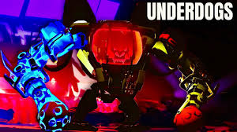
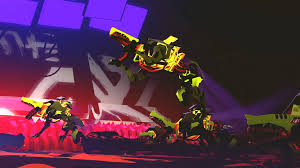

So you play as rigardo serrano and your brother king is getting his brain hacked by big sis not actually their sister just the name of her so basically we go into new brakka and try to find clues on how to find her then we upgrade our mech along the way first you start in the kill box and have to fight in there five times and then you fight a boss named ussam this guy is pretty easy but its just kind of warming you up to the boss fights after that you go to the crack zoo and king your brother really likes this arena because of the thumper in the middle its basically just a big hydrolic press and if you go in it you die and remember its a rouge like well yeah if you die you restart from the beggining anyway after 5 times fighting in the crack zoo you fight a boss named princella and after you beat her you go to the next area the backdoor run it is in a ship no crowd enemies pop out of the walls ceilings and floor and here you have 10 waves with some breaks to repair your mech but the problem here on out is theres no more shops so you better have stacked up some repair kits because if you didnt you will not win The first time I got her I didnt know that so I died almost immedeitly because of how many enemys there were and that I couldnt repair the mech. anyway at the last wave you fight a lot of mini bosses like 2 dozers aka the rhino then you fight like 5 alpha dogs. after those mini bosses you go to the next area called the warren area. and same as the first two areas you fight 5 waves of enemys but these enemys are diffrent because they are the upgraded enemys wth armor or spikes also every enemy is a heavy enemy here and after you do 5 waves you get to the wardens which are big sises and you have to kill 3 of them once yopu kill one the pther puts its head on and once you kill two there is one left with three heads and each one has powers and after you kll them the story mode is done you think but then you realize theres a leaderboard of how fast you can beat the game and number 1 right now is like 20 minutes which is insane for how long the game is it normally takes about a hour for someone to do it for me I did it in 50 minutes. wr video
go to next page to learn about my favorite part of underdogs

